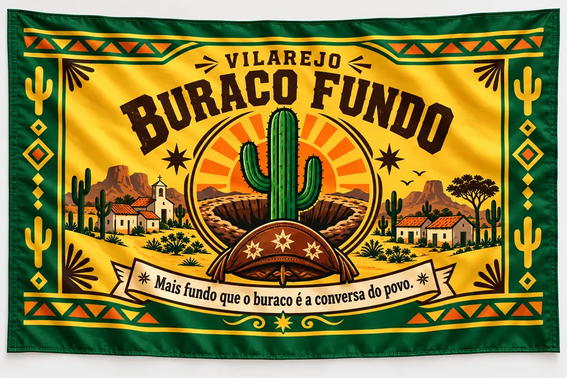

Vilarejo Buraco Fundo
Bem-vindo ao universo de Buraco Fundo, um mundo fictício inspirado no sertão nordestino brasileiro, onde o humor, a cultura popular, o cordel, a amizade, a fé e os causos exagerados se misturam para criar histórias inesquecíveis. Buraco Fundo é uma pequena cidade fictícia situada no interior do Nordeste brasileiro, entre serras, açudes e estradas de terra. Os moradores costumam dizer: “Buraco Fundo fica onde o vento faz a curva e perde o rumo.” Aqui, o absurdo é tratado como normal e toda história aumenta um pouco antes de chegar ao fim.
4.327 habitantes, no Vale das Conversas Perdidas.

Lugares da vila
Arraste para o lado e dê uma volta pela vila.
- Praça CentralFica no centro da cidade. Com o coreto da vila, é onde Seu Lídio Promessa faz seus discursos, Lourinha comenta as confusões e Zé Nego Fábim junta rodinhas de curiosos para ouvir suas histórias.
- Igreja São JoséIgreja do centro da cidade. Em Buraco Fundo a fé é parte fundamental da vida da comunidade: os moradores acreditam em milagres, em promessas, em assombrações e em histórias passadas de geração em geração.
- PrefeituraA Prefeitura Municipal fica no centro da cidade. Foi ela que fez a Declaração Oficial: a população masculina da vila é composta por aproximadamente 97% de Zés e 3% de pessoas que ainda não aceitaram seu destino.
- Mercadinho do Zé FiadoFica na praça principal e funciona como mercado, banco, correio, central de fofocas e agência de notícias não oficiais. Na placa: “Fiado só amanhã.”
- Rádio Buraco Fundo FMRádio do centro da cidade, onde Zé Corneteiro é o locutor.
- Escola Professora MarinalvaEscola Municipal Professora Marinalva, no bairro principal, onde Dona Marinalva tenta ensinar português e matemática e sobreviver às respostas impossíveis de Zézinho.
- Buteco do Zé CocoDizem que o bar é mais antigo que metade da vila e que todo mundo passa por lá pelo menos uma vez por dia. Famoso pela mesa de dominó permanente, pelo rádio tocando forró o dia inteiro e pelo fiado mais perigoso do sertão: quase todas as histórias da vila passam pelo seu balcão.
- Açude VelhoAçude Velho de Buraco Fundo, na zona rural. A pesca no açude é uma das atividades da vila, e foi nele que Zé Nego Fábim diz ter pescado uma baleia.
- Estrada AssombradaUm antigo trecho cercado por mandacarus, onde os moradores afirmam ouvir passos, assobios e risadas distantes.
- Vale das Conversas PerdidasRegião composta por diversos vilarejos sertanejos, conhecidos por suas histórias exageradas, moradores engraçados e acontecimentos improváveis. Frase oficial: “No Vale das Conversas Perdidas, toda história aumenta um pouco antes de chegar ao fim.”
Piadas do Dia, direto do vilarejo
A série em que Silfarnney Valença conta os causos dos moradores.


A Lenda dos Zés

Há muitos anos, quando Buraco Fundo possuía mais bodes do que moradores, surgiu uma história que ninguém sabe se é verdade. Segundo Zé Nego Fábim da Conversa, o governo fez uma campanha: quem registrasse o filho como Zé ganhava um saco de milho e uma galinha poedeira. O povo correu para o cartório e, quando alguém perguntava o nome da criança, a resposta era simples: “Bota Zé mesmo que o milho tá garantido.” Anos depois, quando alguém gritava “Ô ZÉ!”, metade da vila respondia: “O quê foi?!” Em Buraco Fundo existem duas coisas que nunca acabam: os Zés e as histórias sobre eles.
Lei Municipal nº 01, a Lei dos Zés
- Artigo 1ºTodo homem nascido, criado, encontrado ou perdido em Buraco Fundo tem o direito sagrado de ser chamado de Zé.
- Artigo 2ºQuem não gostar de ser chamado de Zé receberá automaticamente um apelido pior.
- Artigo 3ºToda reclamação deverá ser protocolada diretamente com Zé Pavio. Entretanto: não resolve nada, não encaminha nada, não responde nada, não promete nada.
- Artigo 4ºConflitos entre Zés serão resolvidos através de: dominó, par ou ímpar, corrida de jegue, discussão na praça.
- Artigo 5ºÉ proibido chamar qualquer morador apenas pelo sobrenome.
- Artigo 6ºAo ouvir um “Ô ZÉ!” em local público, pelo menos quinze moradores têm obrigação moral de responder: “O que foi agora?”
- Artigo 7ºFica instituído o Dia Municipal dos Zés. Programação oficial: Concurso do Maior Bigode, Campeonato de Conversa Fiada, Corrida de Chinelo, Torneio de Dominó, Troféu Zé do Ano.
- Declaração Oficial da PrefeituraA Prefeitura Municipal de Buraco Fundo reconhece que a população masculina da vila é composta por aproximadamente 97% de Zés e 3% de pessoas que ainda não aceitaram seu destino.
- Bordão OficialEm Buraco Fundo, todo homem nasce Zé. O resto é apelido.
Festas do calendário
- São João
- Vaquejada
- Festa do Padroeiro
- Festival do Bolo de Milho
- Campeonato de Futebol dos Casados
- Festa do Bode
- Dia Municipal dos Zés
Vale das Conversas Perdidas
Os vizinhos de Buraco Fundo, onde toda história aumenta antes de chegar ao fim.
- Catinga do Riso“Onde o cheiro é forte e a risada é garantida.”Famosa pelos concursos de piadas e desafios de improviso. Sua marca registrada é uma enorme estátua de um bode sorrindo.
- Goiabada do Norte“Aqui o doce é de goiaba e o povo é de conversa.”Terra das rodas de conversa e da famosa lata-pandeiro de Coloral.
- Rabo da Serra“Fim de mundo, começo da confusão.”Lar da lendária Pedra da Fofoqueira.
- Arrocho Velho“Aqui o arrocho é no forró e na vida.”Capital regional do forró, piseiro e sofrência.
- Pé de Promessa“Todo mundo promete, ninguém cumpre.”Conhecida pelas obras eternamente inacabadas.
- Lagoa do Engano“A verdade afunda, mas o riso boia.”Sede do Concurso Anual da Maior Mentira do Sertão.
- Tapera da Luz“Aqui até o poste brilha errado.”Famosa pelas histórias sobrenaturais e pelo Poste Encantado.
Lendas da estrada
- O Cachorro PretoA lenda mais famosa da região: moradores afirmam ver um enorme cachorro preto vagando pelas estradas durante a madrugada. A lenda está diretamente ligada a Zé Mochila, que, quando alguém comenta sobre o animal, responde: “Pois era eu.”
- A Estrada AssombradaUm antigo trecho cercado por mandacarus. Moradores afirmam ouvir passos, assobios e risadas distantes.
- A origem de Buraco FundoNinguém sabe exatamente quando a vila surgiu. Alguns afirmam que nasceu ao redor de um poço antigo; outros garantem que tudo começou quando um tropeiro caiu em um buraco tão grande que decidiu construir uma vila ao redor dele.